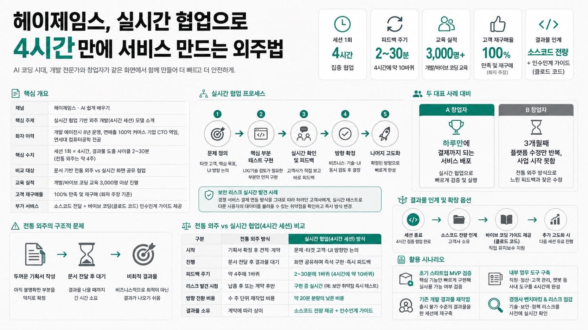

헤이제임스 - AI 쉽게 배우기MORNING DIGEST · 2026-08-27 · 헤이제임스 - AI 쉽게 배우기🎬 영상
헤이제임스, 실시간 협업으로 4시간만에 서비스 만드는 외주법

01핵심 개요 (표)
항목
내용
채널
헤이제임스 - AI 쉽게 배우기
핵심 주제
실시간 협업 기반 외주 개발(4시간 세션) 모델 소개
화자 이력
개발 에이전시 8년 운영, 연매출 100억 커머스 기업 CTO 역임, 연세대 컴퓨터공학 전공
핵심 수치
세션 1회 = 4시간, 결과물 도출 사이클 2~30분(전통 외주는 약 4주)
비교 대상
문서 기반 전통 외주 vs 실시간 화면 공유 협업
교육 실적
개발/바이브 코딩 교육 3,000명 이상 진행
고객 재구매율
100% 만족 및 재구매 (화자 주장 기준)
부가 서비스
소스코드 전달 + 바이브 코딩(클로드 코드) 인수인계 가이드 제공
02핵심 기능/내용 구조
두 대표 사례 대비: 같은 아이디어로 시작한 두 창업자 중 한 명은 하루만에 결제까지 되는 서비스를 배포했고, 다른 한 명은 3개월째 플랫폼을 계속 수정만 하며 사업을 시작조차 못했다는 대비로 협업 방식의 차이를 강조한다.
전통 외주의 구조적 문제: 기획서를 두껍게(디테일하게) 만들어 넘기고 결과물을 기다리는 방식은, 아직 명확하지 않은 부분을 억지로 확정한 뒤 그대로 개발해 버려 비즈니스적으로 최적이 아닌 결과물이 나오기 쉽다고 지적한다(03:25 부근 "더 좋은 방법" 언급).
실시간 협업 프로세스: 문제 정의 → 핵심 UX/기술 검토가 필요한 부분만 먼저 테스트 구현 → 고객사가 직접 확인 및 피드백 → 방향 확정 후 나머지 고도화, 순서로 진행하며 비즈니스·기술·UI 검토를 동시에 병행한다.
보안 리스크 실시간 발견 사례: 경쟁 서비스의 결제 연동 방식을 그대로 따라 하려던 고객사에게, 화자가 실시간으로 다른 사용자의 데이터를 불러올 수 있는 취약점을 직접 테스트로 확인시켜 방식을 변경시킨 사례를 소개한다(13:23 부근).
4시간 세션 운영 방식: 한 세션은 4시간 단위로 진행되며, 고객사 대표(및 관련 직원)는 해당 시간을 비워 실시간으로 다수의 의사결정을 내려야 한다. 짧은 사이클(2~30분)을 반복해 4시간 동안 약 10바퀴의 검토·수정을 돌 수 있다고 설명한다.
결과물 인계와 확장 옵션: 세션 종료 후 소스코드를 전부 제공하며, 고객사가 직접 유지보수를 원하면 클로드 코드 등으로 이어갈 수 있는 바이브 코딩 가이드까지 제공한다. 추가 고도화가 필요하면 다음 세션을 유료로 이어갈 수 있다.
03기술적 맥락
화자는 이 프로세스를 뒷받침하는 배경으로 AI 기반 개발 효율화(바이브 코딩)를 최근 2년간 집중적으로 연구했다고 언급한다. 실시간 세션에서는 AI 코딩 도구(클로드 코드 등)를 활용해 화면을 즉석에서 구현하고 수정하는 방식으로 진행되며, 이 덕분에 과거 수천만 원·수개월 걸리던 견적 규모의 작업이 4시간 안에 처리 가능해졌다고 주장한다.
04전략적 의미
전통적인 외주 개발은 "기획서 확정 → 계약 → 개발 → 납품" 순으로 진행되어 계약 이후 방향 수정이 어렵고, 요구사항이 불명확한 초기 스타트업에게는 리스크가 크다. 화자의 모델은 AI 코딩 도구로 구현 속도가 극단적으로 빨라진 환경을 활용해, 기술 전문가와 도메인 전문가(창업자)가 동시에 실시간으로 의사결정을 내리는 방식으로 전환한다. 이는 스타트업의 MVP 검증 속도와 초기 리스크(특히 보안·정책 리스크) 관리 측면에서 시사점이 크며, AI 시대 외주/에이전시 비즈니스 모델이 "시간 단위 실시간 협업"으로 재편될 가능성을 보여주는 사례다.
05핵심 워크플로우 또는 비교표
구분
전통 외주 방식
실시간 협업(4시간 세션) 방식
시작
기획서 확정 후 견적·계약
문제·타겟 고객·UI 방향만 논의
진행
문서 전달 후 결과물 대기
화면 공유하며 즉석 구현·즉시 피드백
피드백 주기
약 4주에 1바퀴
2~30분에 1바퀴 (4시간에 약 10바퀴)
리스크 발견 시점
납품 후 또는 계약 후반
구현 중 실시간(예: 보안 취약점 즉시 테스트)
방향 전환 비용
수 주 단위 재작업 비용
약 20분 분량의 낮은 비용
결과물 소유
계약에 따라 상이
소스코드 전량 제공 + 인수인계 가이드
06활용 시나리오
초기 스타트업 MVP 검증: 문제는 정의됐지만 UX·수익모델·정책이 미확정인 창업자가 4시간 세션으로 핵심 기능만 빠르게 구현해 실사용 가능 여부를 검증한다.
내부 업무 대시보드 구축: 직원 관리·정산 관리·고객 관리·챗봇 등 사내 도구를 별도 개발팀 없이 4시간 세션으로 완성해 즉시 사용한다.
기존 개발 결과물 재작업: 수천만 원을 들여 외주 개발했지만 출시 불가 수준의 결과물을 받은 회사가, 한 세션 만에 더 나은 UX와 성능으로 재구축한다.
경쟁사 벤치마킹 및 리스크 점검: 경쟁 서비스 기능을 그대로 모방하려는 계획을 실시간 기술 검토를 통해 보안·정책 리스크 여부를 사전에 확인한다.
07현황 및 전망
화자는 현재까지 세션 진행 고객사 100% 만족 및 재구매를 달성했다고 주장한다(제3자 검증 없는 자기 보고 수치).
서비스는 헤이제임스 홈페이지(및 "KJ 사이트")에서 사전에 4시간 내 구현 가능 범위를 시뮬레이션해볼 수 있도록 안내한다.
세션 종료 후 소스코드 인계와 바이브 코딩 전환 지원을 통해 고객사의 장기 벤더 종속을 낮추는 방향을 지향한다.
AI 코딩 도구의 발전으로 과거 수천만 원 견적 규모 프로젝트가 4시간 단위로 압축되는 추세가 이어질 것으로 예상된다.
이 방식은 고객사 측에 세션 시간 동안 온전히 집중하고 신속히 의사결정할 것을 요구하므로, 준비도가 낮은 고객사에는 적합하지 않을 수 있다.